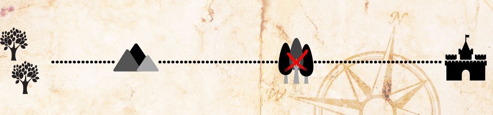

Depois de um dia de caminhada pela base da Montanha, eles decidem parar ao anoitecer para não serem surpreendidos. Enquanto alguns elfos descansam, um pequeno grupo decide explorar o território e chamam Finwe para ir com eles.
1 – Ele não deve ir com o pequeno grupo, pois se acontecer alguma coisa, o restante do grupo que está descansando ficará sem líder.
2 – Continuar sua caminhada para o Oeste, o mais rápido possível.

2 – Continuar sua caminhada para o Oeste, o mais rápido possível.